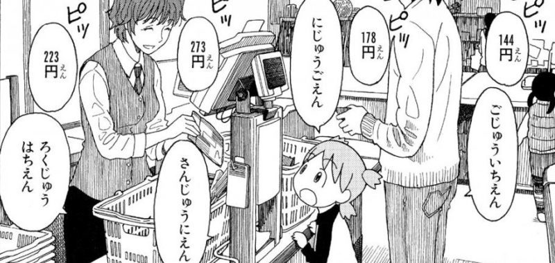
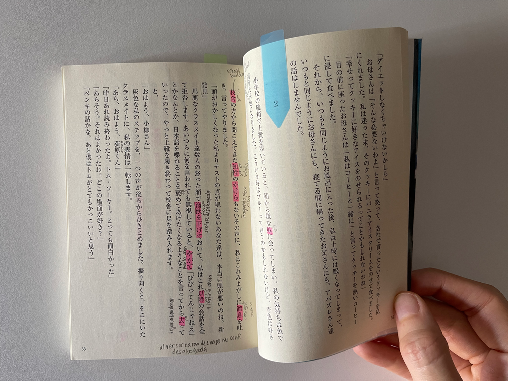

Manga
Muchos de los que empezamos a estudiar Japonés lo hicimos gracias a nuestra afición por el manga y anime. Es uno de los objetivos por los cuales queremos seguir aprendiendo y perfeccionando el idioma. Empezar a consumir menos manga traducido para meternos de lleno en la obra original lleva su tiempo pero a la larga tiene su recompensa.
Al llegar al nivel N4, comencé a reconocer algunas palabras y kanjis en mangas. Sin embargo, fue recién cuando comencé a estudiar para N3 cuando me anime a leer mi primer tomo de manga totalmente en Japonés. Creo que igual se puede comenzar a leer manga mientras estudias para N4, solo debes elegir el título correcto para no frustrarte.
Supongamos que disfrutaste mucho una serie de anime que viste con subtítulos en tu idioma o doblada, y ahora quieres leer ese manga en Japonés, porque como te gusto el anime seguramente te gustara el manga. Pero cuando solo entiendes unas pocas palabras o fragmentos es muy difícil poder seguir la historia, entonces no será una experiencia tan gratificante. No podrás disfrutar del libro en este nivel. En vez de forzarte a leer algo que esperas disfrutar, sería una buena idea probar algo diferente por el momento.
💡 A tener en cuenta:
Lo más probable es que si te enganchaste con un anime, el manga original que la serie se basa ya tenga su correspondiente traducción al español o inglés. Hay dos opciones, ambas pueden ir alternandose a medida que vas aprendiendo y ampliando tu conocimiento.
Si no puedes esperar, lee su traducción, pero si quieres ir más allá y aprovechar la oportunidad para estudiar, consigue un tomo del manga en Japonés, de esta manera podrás comparar frases y palabras, chequear cuánto puedes entender y de qué manera el traductor ha resuelto determinadas frases o palabras.
Si puedes esperar, lee primero el manga en su versión original. Te sorprenderás al notar que quizás no necesites releer el mismo contenido traducido.
Eligiendo un título

Recomiendo elegir un manga en base a reseñas de otros estudiantes, de esa manera podrás saber qué esperar en cuanto al nivel de dificultad, y evitarás frustrarse. Temas simples como “slice of life”, situaciones de la vida cotidiana, historias de amor, historias que se llevan a cabo en el colegio.
Consigue un sample de las primeras páginas y prueba si eres capaz de leer. Si te sientes cómodo con la lectura, si tiene palabras sencillas, pocas palabras difíciles. ¿Puedes terminar de leer todo el sample? ¿Te quedas con ganas de continuar leyendo? Si has contestado que sí, entonces vale la pena incurrir en el gasto de comprar el libro/manga.
La ventaja que tiene el manga por sobre una novela es que podemos seguir la historia con dibujos. Igualmente hay veces donde eso no es suficiente porque la historia es mucho más compleja y rica en diálogos, que no nos permite entender la trama.
Novelas
Leer novelas en japonés no es algo que me había planteado, siempre mi objetivo fue poder leer mangas, pero al viajar a Japón, pude notar que hay librerías por todos lados. Realmente es como toparse con un mundo nuevo, con miles de autores e historias para descubrir. Mientras recorría aquellas grandes librerías, más curiosidad me daba por entrar en el mundo de las novelas. La lectura es muy popular en Japón, y durante mi viaje he podido ver a gente de todas las edades leyendo diferentes tipos de libros. Por ejemplo niños leyendo novelas, en vez de mangas (que es lo que más hubiese imaginado), y por el contrario, gente adulta leyendo mangas, además de novelas.
Recién estoy comenzando a entrar en este mundo y no voy a poder compartirte todas las herramientas y consejos que me han sido efectivos porque yo no las he puesto en práctica aun.
A medida que vaya leyendo distinto material iré actualizando esta pagina con mi experiencia.

Interior de una novela
Elegir una novela
Aquí también va el mismo consejo, busca reseñas de otros estudiantes. En mi opinión aconsejo esperar a tener un nivel en donde hayas podido estudiar gramática y kanjis de uso básico. Por ejemplo, mientras estás estudiando para el N3 o un nivel intermedio bajo, de esta forma puedes asegurarte de que no te va a frenar la gramática básica que no entiendas.
En mi caso, compré mi primera novela en japonés con los últimos yenes que me quedaban mientras estaba en el aeropuerto de Haneda haciendo mis últimas compras antes de tomar mi triste vuelo de regreso a mi país. Como me gustan los gatos, mi elección fue muy simple, elegir una novela que tenga una tapa bonita con un gato. Elegi「世界から猫が消えたなら」(Sekai kara neko ga kieta nara) que se traduce como “Si los gatos desaparecieran del mundo”.
Lo mejor para comenzar, es elegir un tema que te guste y que no tenga vocabulario tan complicado. Como yo recién empiezo a descubrir el mundo de las novelas intento elegir los títulos en base a reseñas de otros estudiantes de japonés o en base a lo que yo investigo sobre un libro. Lo mismo que con el manga, recomiendo comenzar por historias que traten temas cotidianos, simples, temas simples como “slice of life”, situaciones de la vida cotidiana, historias de amor, historias que se llevan a cabo en el colegio o situaciones familiares.
Cómo empiezo?
Esto depende mucho de cada persona, no es cuestión de sólo abrir un libro y comenzar a leer. Por ejemplo, lo primero que me llama la atención es la tapa, luego leo de que se trata (con ayuda del diccionario) y si me interesa, intento conseguir un Sample para mirar como es el libro por dentro, si a simple vista tiene muchos kanji o palabras difíciles de entender.
Como aun no he terminado de leer ningún libro, de hecho este sitio me ayuda a mantener mi motivación y trackear mi progreso, voy a enumerar los libros que considero pueden ser adecuados.
Samples
¿Dónde conseguir samples para leer?
Un Sample es una "muestra gratis" que puede ser unas pocas páginas, o a veces hasta un capítulo entero. La manera más fácil es ir a https://bookwalker.jp/ y buscar el título que quieres. Si no llega a estar allí, puedes probar en Amazon Japan, y hasta descargarlo a Kindle para tu comodidad.
Si utilizas mucho tu móvil o tablet, la manera más cómoda para mi fue crearme una cuenta en Amazon Japan y descargar la app de Kindle en mi celular y tablet. (Asegúrate de iniciar sesión en la cuenta de Amazon Japan cuando uses Kindle). De esta manera, busco si el libro que me interesa está en formato eBook y descargo un Sample. Por lo general, un Sample contiene el índice y la primera parte del primer capítulo, o las primeras páginas.
¿Por qué Amazon Japan?
Japón es un país que tiene unas reglas de copyright muy estrictas, y material en idioma japonés, como libros, cómics, películas, etc, no suelen comercializarse fuera de Japón. El que sea un mercado tan cerrado, hace difícil poder conseguir ese material desde el exterior. Shops online como cdjapan nos permiten acceder a un gran catálogo de material en idioma original, sin embargo, si queremos echar un vistazo al contenido antes de comprar, Amazon Japan es la mejor opción.
Me gustó el Sample que leí, ¿cómo lo compro?
Para esto hay dos maneras. Si quieres leerlo de manera digital, tienes que dirigirte a Amazon Japan desde tu computadora o browser del celular, iniciar sesión con tu cuenta japonesa y comprar la versión para Kindle.
Si quieres tener la versión en papel físico, lamentablemente Amazon Japan, por lo general, no hace envíos al exterior. En este caso, debemos elegir una tienda diferente, en mi caso la tienda que más uso es http://www.cdjapan.com . Buscar el título del libro en romaji puede ser complicado porque a veces cdjapan no lo reconoce, lo mejor es pegar en el buscador el nombre en japonés.
Que hago si cdjapan no tiene el libro que busco? Como consejo, yo optaría por elegir otro libro, tener una segunda opción. Cuando busques libros para leer, siempre es bueno tener una lista de aquellos que más te interesen, así, en caso de que el título que quieres no esté disponible, tienes una o dos opciones más para elegir.
También puedes consultar Aozora Bunko , este sitio que tiene libros y novelas en japonés de autores clásicos que se puede leer gratiutamente ya que no están licenciados. La página se quedó un poco en el tiempo en cuanto a diseño y puede ser medio difícil de navegar.
Aquí dejo unos links a blogs en ingles muy interesantes e inspiradores para comenzar a leer novelas en japonés: